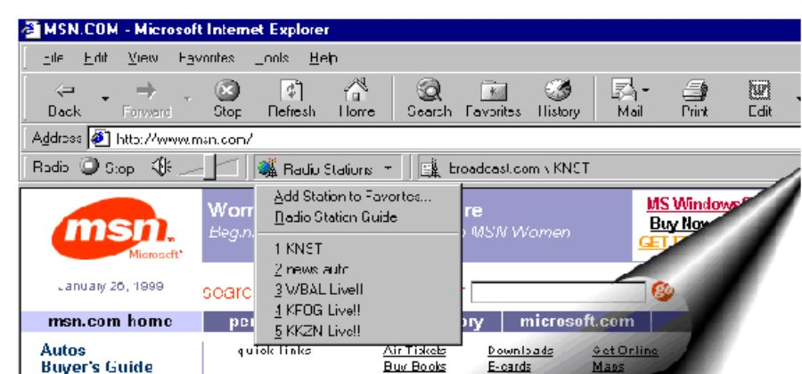

Mike Culver
Microsoft Corporation
Posted May 5, 1999
Contents
Introduction
What Is the Windows Radio Toolbar?
Supporting the Windows Radio Toolbar
The purpose of this article is to help you implement radio stations that broadcast over the Web using Microsoft® Windows® Radio toolbar technology in Microsoft Internet Explorer 5. This document is quite short, because it is easy to support the Windows Radio toolbar if a station is already streaming using Microsoft Windows Media Technologies. Support of the Windows Radio toolbar makes it more convenient for users of Internet Explorer to listen to your station while they surf the Internet. As well, it will be easier for them to return to your station every time they get on the Web. The value to your Web site is analogous to a listener setting the buttons on their car radio to a terrestrial station.
Internet Explorer 5 features the new Windows Radio toolbar, which affords users a way to conveniently listen to radio stations while they explore the Internet. The Windows Radio toolbar plays audio files encoded using Windows Media Technologies. It is an intuitive toolbar (Figure 1): either click on Radio Station Guide to find a station or, if you have used the Windows Radio toolbar before, pick a station from one of five most-recently listened to stations.

Figure 1: The Windows Radio toolbar
The toolbar is invoked any time a URL using the special protocol (described below) is clicked by the user. The toolbar is not persistent from session to session -- that is, the toolbar will not re-appear the next time Internet Explorer 5 is started -- unless the user enables persistence. This is done by choosing the Tools menu, clicking Internet Options, clicking Advanced-Multimedia, and then Always show Internet Explorer Radio bar. As well, like all toolbars, it can be turned on via either View Toolbars or the secondary mouse menus.
Simple, simple, simple. The Windows Radio toolbar plays any ASX file encoded using NetShow 3.x or later. It does not require a new format, but just a different link that uses the vnd.ms.radio protocol, as shown here:
Listen to <A href="vnd.ms.radio:mms://123.123.1.2/radioshow.asx"> <b>Listen</b></A> to a live broadcast from Antarctica!<br>
All the magic is in vnd.ms.radio:. This launches both the toolbar and your broadcast. Since the Internet is about supporting all users, not just users who have Internet Explorer 5, we encourage you to provide the following three links on your page:
<A href="vnd.ms.radio:mms://123.123.1.2/radioshow.asx"> <B>Listen, using Windows Radio toolbar,</B></A> to a live broadcast from Antarctica! (This requires Internet Explorer 5.)<BR>
<A href="mms://123.123.1.2/radioshow.asx"> <B>Listen, using Windows Media Player</B></A> to a live broadcast from Antarctica!<BR>
<A href="http://www.microsoft.com/windows/mediaplayer/download/default.asp"> <IMG src="type path to logo image here" WIDTH="65" HEIGHT="57" BORDER="0" ALT="Get Windows Media Player" VSPACE="7"></A>
The ASX file in the next sample is RadioShow.asx (also used in the example above). The values for the <TITLE>, <AUTHOR>, and <COPYRIGHT> elements shown in the code sample are displayed at the right-hand end of the toolbar.
The ASX file can be enhanced to include as many other features as you wish. In that manner the ASX file can be used for the Windows Radio toolbar, embedded HTML applications, and traditional stand-alone player environments.
<ASX Version = "3.0"> <TITLE> Title of Show: This should be the Show or Call Letters </TITLE> <MoreInfo href = "http://www.mysite.com" /> <Entry> <Title>Title of Clip: Clip</title> <Author>Visit www.MySite.com/catalog for cool stuff!</author> <Copyright>Copyright: Copyright© 1999 Company Name</copyright> <Ref href = "mms://www.mysite.com/news.asf" /> <Ref href = "mms://www.mysite.com/sorrycharlie.asf" /> <!--The first <Ref> element above points to the primary stream. The second <Ref> element is only accessed if the first fails. The second <Ref> element points to a stored ASF file, which is a short message that the station is currently unavailable. Also, we've repurposed the <AUTHOR> tag as a promo to drive site traffic.--> </Entry> </ASX>
The Windows Radio toolbar can help you grow your business. Some partners who participated in the Windows Radio toolbar launch say their traffic increased six-fold over previous levels.